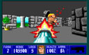
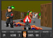
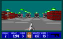

Desperate Measures (2007+)
CODENAME: BJW60IV

First hinted at in Project Totengraeber's endgame message, Desperate Measures is a a new, 60-level Wolfenstein add-on that I will release in episodic format. Originally planned on a much grander scale, I have since "gone back to basics," deciding to concentrate primarily on level design. Check the link below for downloads and further details.
Project Totengraeber (1999-2000)
CODENAME: BJW60III

My first (and last) total conversion for Wolfenstein, the culmination of everything I'd worked for. Includes 48 levels, totally remastered graphics and sounds, and a new engine featuring seamless progression, weapon jamming, two new keys, and lots more. Was possibly the first add-on ever to feature custom help art, end art and demos.
Conflict In The Fatherland (1999)
CODENAME: BJW60II

Regarded by many as my best work, CITF entered development as soon as The Renovation was completed. Featuring 60 new levels, a few new actors, sprites and sound effects, this is a taste of Wolfenstein as id Software always intended it. Very true to the style of the original game, and a treasure for purists.
The Renovation (1994)
CODENAME: BJW60

A full 60-level replacement for Wolfenstein 3-D, later released as "Game C" of Apogee's Wolf Super Upgrades pack. Contains every level I had designed to date, including some of the awful "test levels" I first put built with SODedit. Developed way before I had learned how to do justice to level design aesthetics, but still critically acclaimed by many in that day.